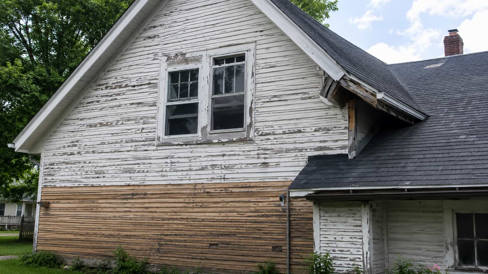
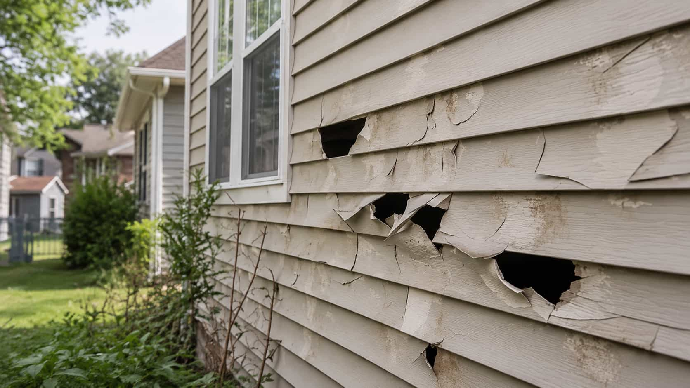

New and planned projects
Installation and replacement requests.
Use Exterra to start a siding request when your project involves new exterior coverage, larger replacement planning, or provider discussions around material options and project scope.
Quick siding need navigation
Choose the closest request type, then submit your project details so available participating providers may review your information.
Exterra platform overview
Exterra helps homeowners organize siding project details and compare available local provider options without presenting itself as the company performing the siding work.

Popular siding categories
New and planned projects
Use Exterra to start a siding request when your project involves new exterior coverage, larger replacement planning, or provider discussions around material options and project scope.

Focused issue or material direction
Repair requests can help organize visible issues, while vinyl siding requests can focus provider conversations around profile, color direction, maintenance expectations, and quote scope.

Material-specific comparison
Material-specific requests help homeowners compare provider-supplied information about siding appearance, maintenance expectations, exterior style, warranty terms, and scheduling.
How Exterra matching works
Exterra helps structure the beginning of the request. Participating providers supply final information, terms, and availability.
Share siding needs, property context, location, urgency, material interests, and helpful notes.
Available participating providers may review the request and contact you with provider-supplied information.
Compare quote scope, scheduling, materials, warranty terms, communication, and provider requirements.
You decide whether a provider-supplied option fits your project before moving forward.
Siding project situation selector
Select the closest situation below. The guidance card and photos update to help frame the type of siding request a homeowner may submit through Exterra.
Older exterior materials
A replacement-focused request can help organize details about the age of the exterior, visible wear, material preferences, removal expectations, trim questions, and timing. Exterra helps homeowners start with clear information so provider conversations are easier to compare.
Explore Siding Replacement

Exterior decision rail
Move through the most common homeowner decisions before submitting a request. Each path opens a focused siding category or sends you toward the request form.
Homeowners can review provider-supplied information around service area, quote details, material discussion, project scope, timing, and scheduling availability. Exterra helps organize the request, while participating providers supply final details.
Provider conversations may include warranty terms, licensing and insurance details, communication expectations, preparation needs, and final agreement terms. Homeowners should verify provider credentials and decide whether the terms fit.
Materials & exterior style options
Exterra does not sell siding materials or recommend a single provider. Use this section to think through material direction, exterior style, upkeep expectations, and curb appeal goals before comparing provider-supplied options.
Trust & transparency
Exterra helps users begin a request and compare available provider options. It does not replace homeowner review of provider-supplied terms.
Exterra does not perform siding installation, replacement, repair, inspection, manufacturing, or retail work directly.
Final pricing, quote scope, payment terms, and project costs are provided by participating providers.
Scheduling, response times, availability, and project timing may vary by provider and location.
Homeowners should review provider credentials, insurance, licensing, warranties, permits, and final agreement terms.
Provider terms vary
Exterra supports the beginning of the request process. The provider you choose, if any, supplies final project details, terms, and responsibilities.